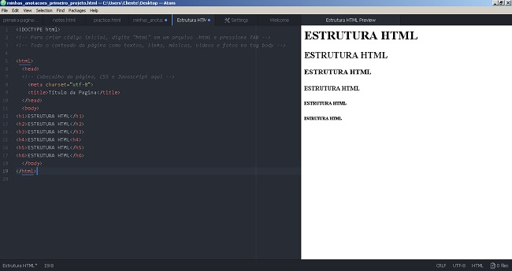

- Internet: É usado um protocolo HTTP para comunicação com os servidores.

- Servidores: Respondem ao protocolo com os arquivos solicitados, onde o navegador os exibe.
Essa grande rede inventada em meados de 1990 e possuindo mais ou menos 30 bilhões de páginas, é constituida por vários tipos de arquivos, como texto simples, vídeos, músicas, imagens e documentos HTML (objeto de estudo deste capítulo do curso). Há ferramentas que em conjunto nos permitem navegar em diversos tipos de sites para por exemplo ver vídeos no YOUTUBE, pesquisar e perguntar algo ao GOOGLE, socializar e postar nossos melhores momentos da vida nas REDES SOCIAIS e aprender em qualquer plataforma de ensino como a UDACITY. Para qualquer dessas paginas escolhidas aparecerem em nossa tela, antes existem processos ou um "fluxograma":
- Navegador: Quando digitamos a URL/site, é feito uma solicitação à Internet para os servidores.
- Internet: É usado um protocolo HTTP para comunicação com os servidores.
- Servidores: Respondem ao protocolo com os arquivos solicitados, onde o navegador os exibe.
Antes de aprender a construir e criar documentos HTML é necessário desenvolver uma empatia com computadores, ou seja entender como funciona, pois, diferente da linguagem falada que utilizamos para comunicação humana, para a linguagem de programação de computadores não existe a ambiguidade, as instruções devem ser exatas e as sintaxes escritas corretamente para que o computador possa ler e interpreta-lás, se não o código não funcionará. Continuando com as diferenças entre humanos x computadores, o tipo de software utilizado também se difere, sendo chamado de Processador de palavras que permite a composição de textos em linguagens naturais e o Editor de Texto para linguagens de computadores. Ex: MS WORD x ATOM.
HTML (HyperText Markup Language) é formado por conteúdos de texto, referencias a outros documentos, link para outras páginas (Hyperlinks) e as Marcações (Tags) que mudam os aspectos do texto comum (negrito, itálico, sublinhado, criar paragrafos e indicar quebra de linhas, etc...). Os marcadores HTML se compõem de:
< nome > Conteúdo < / nome >Obs: Tags vazias são aquelas que não possuem tag de fechamento. Ex: < br > e < img >.
As tags são divididas entre esses dois tipos de elementos:
ALINHAMENTO:
< a >
< span >
< img >
< strong >
< br >
BLOCO:
< div >
< p >
< form >
Além de mudar aspectos de texto, as Tags criam toda a estrutura. Conforme imagem abaixo:
As inúmeras tags possuem diferentes atributos, são divididas em elementos, constroem as estruturas do HTML, devendo sempre verificar compatibilidades de navegadores, entender o fluxo de envio e recebimento de arquivos e entre outros. Entendi que enfrentarei algumas dificuldades nos processos e que não é um mártir a necessidade de memorizar tudo de uma vez, pois, até mesmo com prática é normal se confundir em alguma etapa, mas no vasto mundo da INTERNET também é onde encontro tudo documentado!